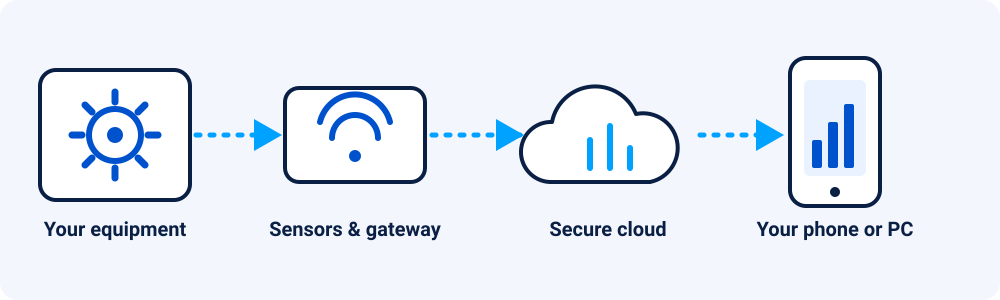
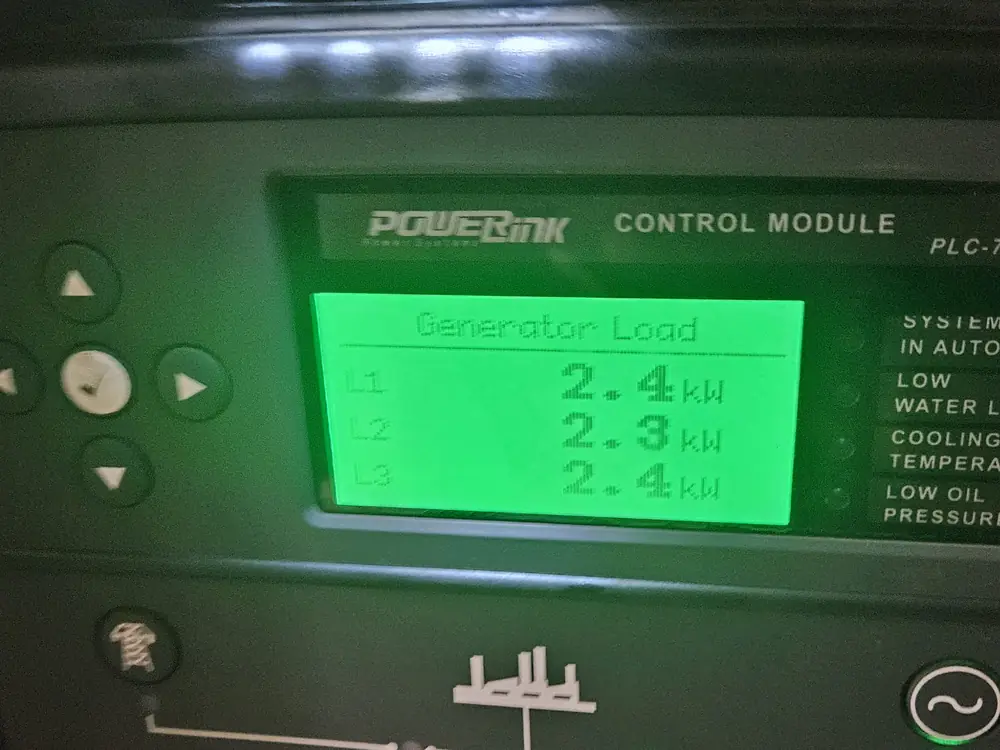
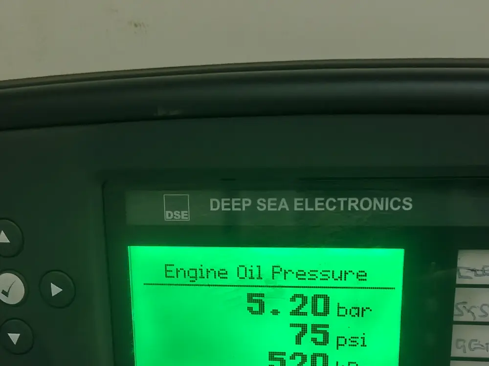

Equipment and asset monitoring
- What it does
- See how your machines are doing at any time, and get an alert before something fails.
- What you get
- Less downtime and clear facts to base your decisions on.

We help you see what your equipment, power and buildings are doing, all the time, from anywhere. You get alerts when something needs attention, so you can fix small problems before they become expensive ones.

Small devices are fitted to your equipment to measure what matters: power, temperature, runtime, levels and more.
A gateway sends the readings to the cloud so they are stored and analysed.
You see live status on your phone or computer and get an alert when something is wrong.
Generators, UPS and inverters already measure load, pressure and temperature. We connect that information to dashboards and alerts.


Often not. Sensors and gateways can usually be added to existing equipment, so you keep what you have and gain visibility of it.
Yes. You can check your equipment from your phone or computer and receive alerts when something needs attention.
Generators, UPS, solar systems, air compressors, buildings and lighting, farms and general site conditions. Tell us what matters to you and we will advise.
Ask for a demo. Call, WhatsApp or email sales@afive.cc.